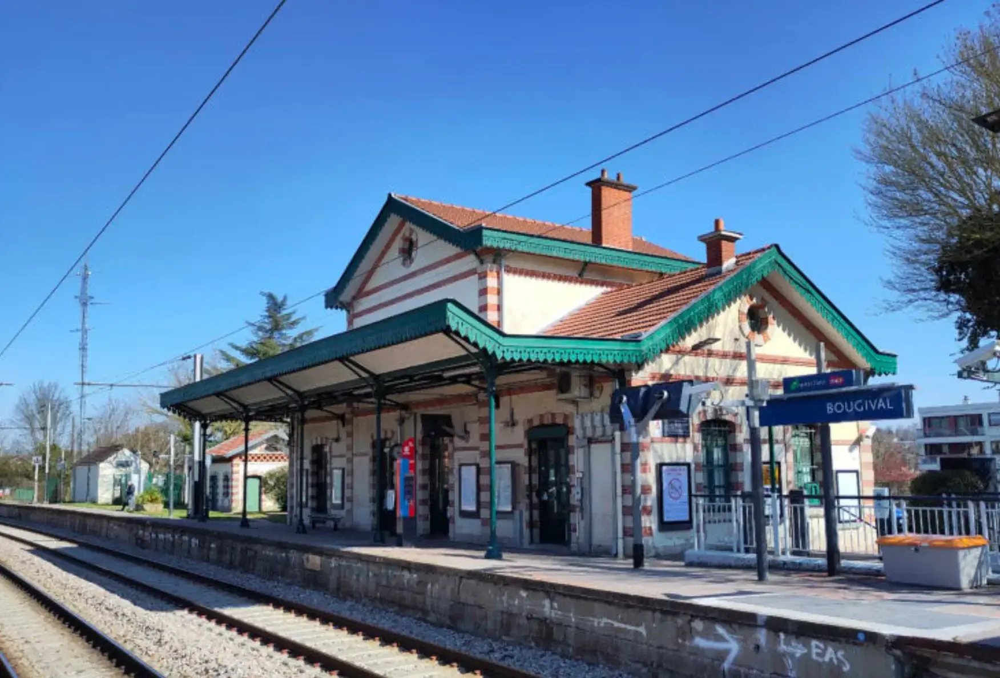

Station-Cœur
Tiers-lieu solidaireLa gare réinventée en lieu de vie solidaire
Station Cœur imagine une gare transformée en véritable espace de vie : un lieu d’accueil, de services, de convivialité, de réemploi, de culture et de lien intergénérationnel.
- Réemploi & ateliers
- Lien social
- Intergénérationnel
- Ressourcerie, café-cantine, ateliers d’upcycling et de réparation
- Bibliothèque d’objets et ludothèque
- Événements culturels et Jardin des Papotages
- Services de proximité pour habitants et voyageurs